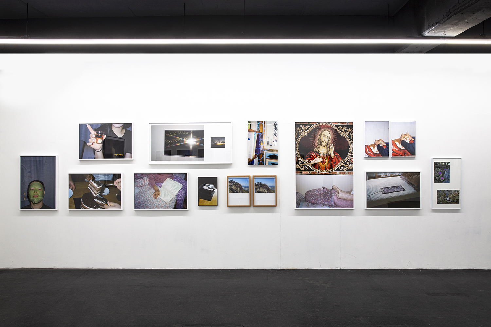
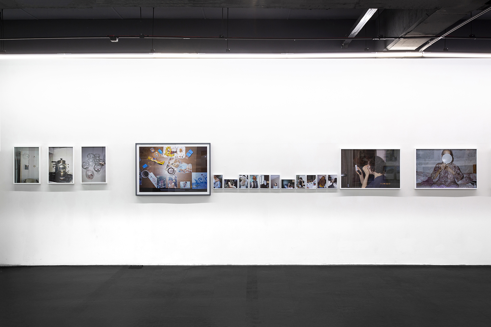
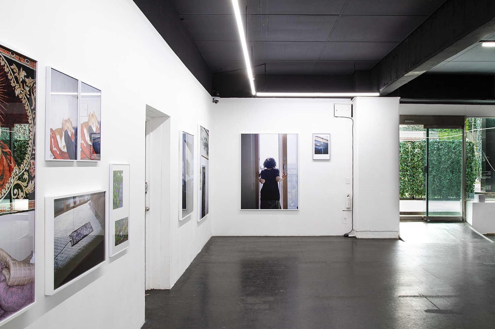

당신 옆에 있는 사람 곁에서
<안녕하세요, 손.
오랜만에 메일을 보냅니다.
1학기가 마무리되고 거의 처음 보내는 듯하네요.
저는 메일을 보내지 않았던 시간 동안 전시를 간간이 보았고 그중에서 메일로 보낼만한 전시는
1. 안초롱 개인전: fem
2. 장세진, 곽영준 2인전: All About Love
3. 노순택 개인전: 검은 깃털
이 정도인데요. 안초롱 개인전이 가장 빨리 끝났으니 먼저 보내겠습니다.


제가 이 전시를 보러 가야겠다고 생각한 이유는 일단 이 전시가 '여성'이라는 주제를 다뤘기 때문입니다. 아마 d/p 인스타에서 소식을 처음 보았던 듯해요.
저는 안초롱 작가에 대해서 아는 게 하나도 없었고 뒤늦게나마 그가 '압축과팽창'이라는 팀의 구성원인 걸 알았지만 그 팀에 대해서도 잘 알지 못해요. 그런 제가 이 전시를 선택한 이유는
'여성'이라는 주제를 다뤘다는 게 1번,
d/p라는 친숙한 전시공간에서 진행되었다는 게 2번,
사진 전시라는 게 3번이었습니다.
'사진에서 여성들이 보는 것과 여성 사진가로서 안초롱이 보는 것에 대해 이야기'한다니 혹할 수밖에 없었죠. 어느새 제가 여성을 주제로 다루는 전시를 챙겨보는 사람이 된 듯하네요.


본 전시에 있는 사진들은 대부분 별도의 연출이나 기획이 부각되지 않는 스냅 사진입니다. 전시 소개 글을 보면 '2017년부터 2022년까지 안초롱이 찍은 사진 데이터베이스에서 여성을 촬영한 사진, 여성으로서 자신의 시선이 담겼다고 선택한 사진들을 전시한다.'고 나와 있는데요.
보통 '시선'은 '관점'이라는 단어를 조금 더 부드럽게 은유하는 역할로 많이 쓰인다고 생각했는데 이번 전시에서는 물리적인 의미에서의 ‘시선(= 눈이 가는 길. 또는 눈의 방향)’이라는 의미로 쓰였다고 느꼈습니다.


사진들이 참 많죠. 제가 전시장에 들어가서 받은 첫인상도 “우와, 사진이 참 많다!” 였습니다. 다양한 크기의 액자와 촘촘한 리듬의 디스플레이가 눈에 들어왔는데요. 지난 4월에 보았던 전명은 사진가의 개인전 <내가 안고 있는 겨울>이 떠올랐습니다. 그 전시 역시 사진을 액자에 넣어 공간을 구성했는데 그 전시의 경우 디스플레이의 리듬이 상당히 시적이었거든요. <fem>은 전시되는 사진의 갯수가 훨씬 많아 그 리듬감을 형성하는 음표의 갯수가 더 많은 편이라고 느꼈어요. 전명은의 경우 단어 하나, 문장 하나를 단위로 리듬을 짠다면, 안초롱의 경우는 문단 하나를 단위 삼아 리듬을 짠달까..
두 전시 모두 저마다의 방식대로 즐거웠습니다.
1. 전명은 개인전 <내가 안고 있는 겨울> 전경
2. 안초롱 개인전 <fem> 전경 Photo by Lim hyojin



아, 그리고 저는 앞서 말한 대로 여성의 '시선'이라는 단어를 여성의 '관점'으로 받아들였는데요. 그 때문에 전시장에 가득한 스냅 사진을 보며 '생물학적 여성이 촬영할 수 있는 일상 스냅 사진은 많이 다를까?' 라는 의문이 처음에 들었어요. 서울에 사는 20대 청년이라면 인스타그램에서 '일상 사진'이라는 카테고리로 소비되는 스냅 사진들에 눈이 절여져 있을거라 생각하는데, 이번 전시에 나온 사진들은 그와 어떻게 다를까? 달라야 하나? 안 다르다면 그것 나름대로 봐볼 거리겠다고 생각해보면서요.
전시를 위해 셀렉한 사진들은 여성으로서 살아가면서 하게 되는 몸에 대한 선택(핑크색 원피스, 화장품, 화장하는 모습)이나 믿음을 두게 되는 곳에 대한 선택(성모 마리아 상과 같은 종교 물품) 등으로 이루어진 집안의 풍경을 담고 있었는데, 이런 것들을 안초롱이라는 사람이 바라보았었구나 하고 상상했습니다.


그러다가 문득 '그럼 20대 남성인 나는 어떤 기획이나 연출 없이 '스냅'으로 이 정도로 많은, 무방비 상태의 여성들을 촬영할 수 있나?' 라는 생각이 들었는데요. 없겠더라고요. 그 사람들이 저의 뭘 믿고 자신의 이미지를 내어주겠어요. 저는 최근 들어 어떤 대상을 촬영한다는 것은 그 대상을 사용하는 것이라고도 생각하는데 (어떤 대상을 촬영할 때 그 대상의 내구도가 실제로 감소하는지는 궁금하네요) 누군가 허락 없이 나의 물건을 사용하면 기분 나쁘잖아요.
다른 사람이 그 물건을 어떻게 사용하느냐에 따라 소유자는 그 물건을 버려버릴 수도 있고, 버리지는 않지만 다시는 사용하지 않을 수도 있고, 더 사랑하게 될 수도 있잖아요. 핵심은 사람 찍으려면 동의 받아야죠. 찍으려는 장면이 그 사람의 사적인 것이라면 더더욱 그렇고요. 적다보니 초상권에 대한 생각을 당연하게 가지고 있는 것은 제가 한국 사람인 영향이 큰 듯한데요. 작가 본인은 어떻게 생각하고 있을까요? 문화예술 메거진 BeAttitude에서 발행된 작가의 인터뷰를 찾아봤습니다.


그렇게 위 사진들은 제가 2,30대 여성이라면 찍을 수도 있는 사진이었겠으나 20대 남성인 제가 찍을 수는 없는 사진이라고 생각했습니다. 위 사진들은 모두 '안초롱이라는 2,30대 여성 사람/작가'의 자리에서만 촬영할 수 있는 사진이었고, 작가로서 그가 '여성'이라는 개념을 자기 삶과 굉장히 가까운 곳에서부터 포착한다고 느꼈어요.


마지막으로 이야기하고 싶은 작품은 바로 위에 있는 사진입니다. 풍경을 담은 컬러 사진과, 그와 같은 풍경을 찍은 듯하면서도 (사진 아래에) 난간의 손잡이가 있는 것으로 보아 실내에서 촬영한 것 같은 흑백 사진이 서로 겹쳐있는 작품인데요. 다른 작품들과는 달리 두 장의 사진을 겹쳐 놓았다는 선택이 저의 눈을 머무르게 했습니다. 그리고 이 선택의 이유를 본 전시를 기획한 권정현의 전시 서문에서 찾아볼 수 있었습니다.
“집밖의 풍경 사진은 작가의 엄마가 찍어서 메신저로 보내준 사진이다. 산책이나 등산 같은 일상적 여가 활동 중에 엄마가 남기고, 딸에게 전해준 사진은 그녀가 자신의 일상에서 간직하고 전달하고 싶었던 순간을 보여준다. 그러므로 여기서 사진은 전문 작가가 찍은 것과 일반인이 찍은 것으로 구분되는 대신에, 사람들이 일상에서 기록하고 간직하고 싶어하는 이미지로서 존재한다.”
집밖의 풍경 사진은 작가의 어머니가 찍었다고 하시니, 집안의 풍경 사진은 작가 본인이 찍었다고 생각해볼 수 있겠습니다. 문득 집밖의 풍경 속 산이 그리는 수평선과 집안의 풍경 속 산이 그리는 수평선이 이어져있다는 사실에 눈이 가네요. 저의 어머니도 주말에 등산을 가시면 가족 단톡방에 위와 유사한 풍경 사진을 보내주시는데요.
오순도순한 하루 보내시길 바랍니다. :)
재훈 드림